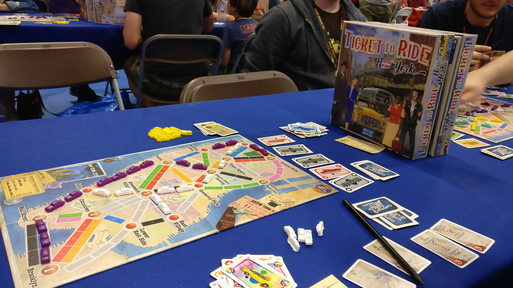
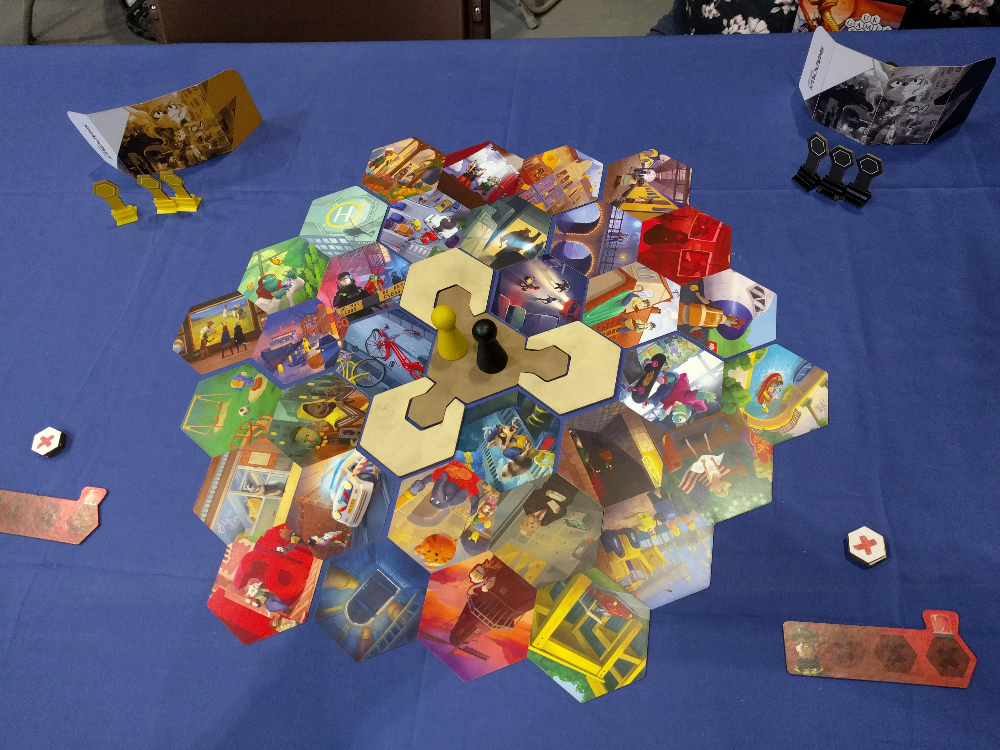
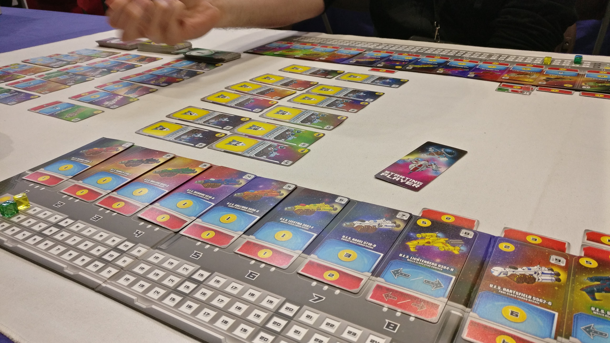
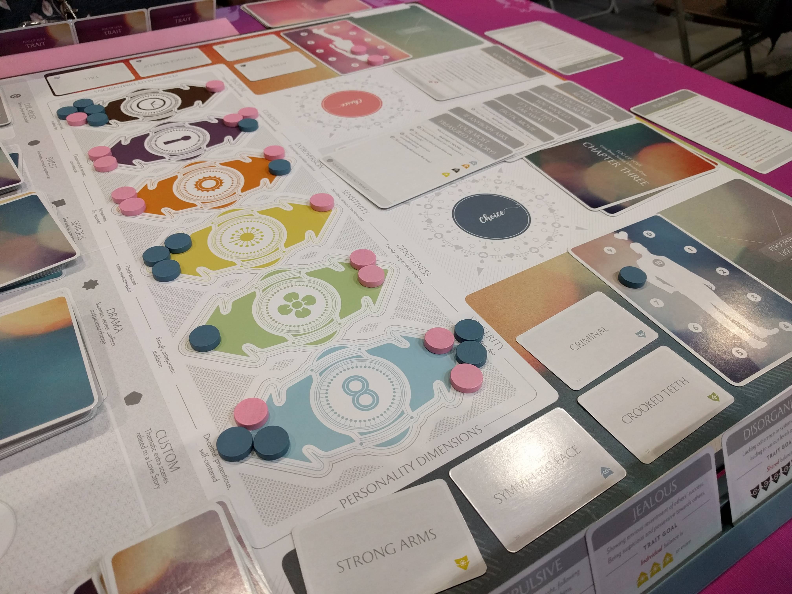
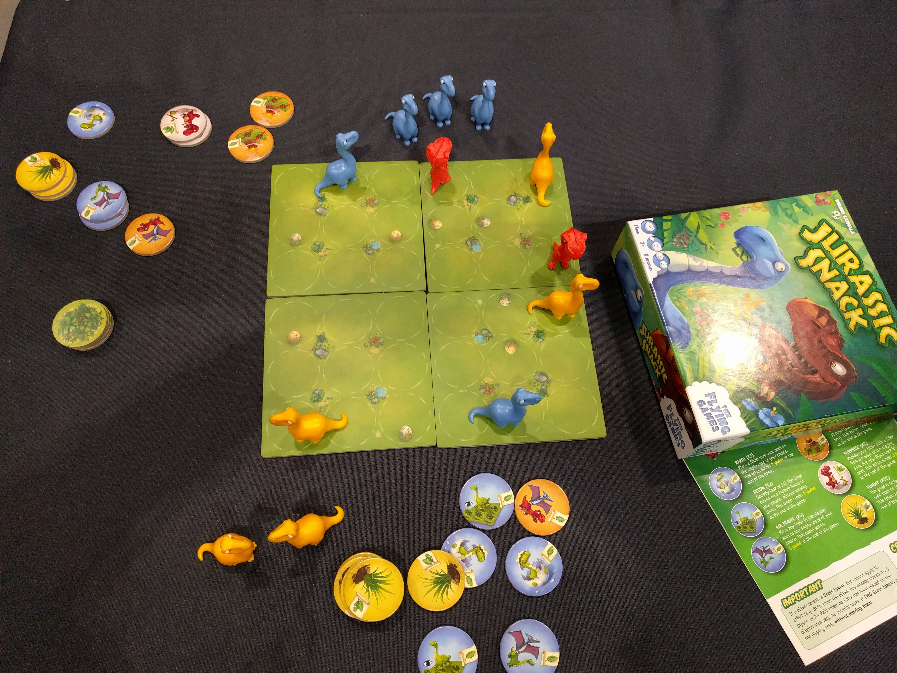

For a first time at the Expo, we had a very busy and very eventful day. After the disaster that was our first hotel on Friday evening, we had a semi-lazy start to Saturday, not getting to the expo hall til just after 10am. We parked in East 4, and the shuttle bus to and from the Piazza entrance to the NEC was superb; quick, easy, free and comfy.
Our original plan once getting into the expo was to head straight to Z-Man Games just in case they happened to have copies of Pandemic: On The Brink, but naturally, we got distracted. Distracted by the massive Ticket to Ride and Days of Wonder signs over their play area. We got there in perfect time to sit down and demo Ticket to Ride: New York. In our house, we are massive fans of Ticket to Ride, even when we find flaws with it. I was over the moon to find out that there were demo copies at UKGE; I’d been expecting to wait until Essen to get my hands on it.
Ticket to Ride: New York is a quick, snappy version, taking no more than 20 minutes to play. As the title suggests, it’s set in New York and the goal is to claim routes leading to as many points of interest in the city as possible by placing taxis along the coloured routes. The ‘wild cards’ in this edition are, of course, the classic New York yellow taxi. As with every new edition of TTR, it’s going straight on my ‘to buy’ list. According to one rep from the Days of Wonder play area, it can be expected to hit stores around September.
Ticket to Ride: New York. Credit: Hannah Bunce
Next up, we found ourselves wandering around the stand run by Thirsty Meeples where we bought two more scenarios for T.I.M.E. Stories; Expedition: Endurance and Lumen Fidei. With the addition of these, we now have the complete set of official scenarios for T.I.M.E. Stories - we’re both certainly looking forward to getting our teeth back into the easy and fun storytelling game.
We then finally got to the Z-Man Games stand… Only to find that it was only a demo area for games that have been out for a while. That said, every table was occupied, and it’s great seeing people trying out games that have been staples for a number of years already. But the Z-Man Games offering wasn’t what we were after, so for us, it was back to exploring Hall 1.
We found ourselves at the Board Game Extras stand where we bought Pandemic: The Cure, spoke about and almost bought Lords of the Waterdeep. At the same stand, we also eyed up a wooden storage box for Dominion, but it looks too small for the amount of Dominion we have!
It was now time to explore Hall 2; with the Playtest UK area, the Bring and Buy and a lot of open gaming space. After spying the long queue to get into the Bring and Buy, we wandered about Hall 2 after a short refreshment break and found ourselves at the Japanime Games stand. We’re huge fans of Japanime Games, especially Tanto Cuore. Whilst there were no new Tanto Cuore products to entice us, we bought the Northern Enchantress expansion to Heart of Crown, another lovely deckbuilder that we’re fond of. A few other things; mainly Barbarossa and a General Princess Flammaria (my favourite Princess in Heart of Crown) oversized playmat caught our attention. Sadly, the playmat was out of stock. We ended up returning later in the day to buy Barbarossa and another Japanime Game called The Terrifying Girl Disorder which was bought on whim with very little research done into it. I’m super excited to get it to the table asap!
Just around the corner from Japanime Games was the Oink Games stand. After squeeing like a boardgame fan at a boardgame expo, I composed myself enough to buy their new game Troika. Again, we had little to no prior knowledge about this game, other than we love Deep Sea Adventure and we’ve enjoyed In A Grove the handful of times we’ve played it. The aesthetic of the offerings from Oink Games is so lovely that it’s impossible to imagine they’d put out a bad game.
Next up we found ourselves back in Hall 1, this time at a play area hosted by AEG and some other publishers. We played a demo game of Shadows Amsterdam with three other people. Shadows Amsterdam is a team-based treasure hunt where one member of each team has to guide the others to evidence locations, and once three pieces of evidence are found, lead to them to exit locations. The clues are given in the same way clues in Mysterium are given; pictures that may or may not invoke thoughts, and similarities of the picture cards that make up the map. I’m sure there’s a backstory as to why we’re hunting pieces of evidence in what I’m assuming is Amsterdam, but this wasn’t explained to us, nor was there a rulebook in sight.
Shadows Amsterdam. Credit: John Beech
A few tables over, we played a three-player game of Space Base, a Machi Koro-esque game where you are building space colonies. Unlike Machi Koro, you have access to both dice immediately and this makes for some very interesting spread of combos. We think it fixes some of the flaws in Machi Koro, and with it being space-themed, we were nearly drooling over it. After asking one of the attendants if it was for sale at the Expo, we were told that it’d only been released about a month back and should be for sale at most of the retail stands. Later in the day, we found out it was sold out everywhere, but as always, Fanboy3 came to our rescue, and there should be a copy with our name on it in their Manchester store either next week or the week after!
Space Base. Credit: Hannah Bunce
Next game we played was Fog of Love, which is something I’ve been interested in for what feels like forever. The aesthetic of the box and board is very reminiscent of T.I.M.E. Stories - beautiful pastel colours. Fog of Love is a two-player roleplaying game about two people going through the ups and downs of a modern relationship. It can be won cooperatively or won just by one player or lost by both players. The tagline on the box is “Romantic comedy as a board game” and I couldn’t agree more. It had us laughing, torn and ultimately sad about the relationship our characters had formed. The strategy, for me, took a while to click, and eventually it did… with just one turn left in the game. However, thanks to a lucky pick from the Destiny deck, I ended up winning by choosing an Honorable Exit from the relationship. It was an insta-buy for me, especially with the expo-exclusive offer of the base game plus three expansions (The Kickstarter Edition) for £70 instead of its usual £95.
Fog of Love. Credit: John Beech
After exploring the halls a bit more, our poor feet needed a break and there was an empty table with an intro Dominion game set up. We’re fairly adept at Dominion now with this game only taking around 15 mins, and a close win for me with John being only two points at the end.
Our final game of the day was a dinosaur game called Jurassic Snack. A simple two player game where you control a pack of Diplos and eventually a T-Rex. The aim of the game is to eat as many grass tiles as possible whilst avoiding the hunting T-Rexes. As huge dinosaur nerds, with a preference for diplos, this felt like a game made especially for us. The game doesn’t appear to have been released for sale yet, but when it does, it’ll probably find itself in our collection.
Jurassic Snack. Credit: John Beech
Shortly before leaving the expo for the day, we eventually got into the Bring and Buy. This section was probably the only negative aspect of the day; it was too overcrowded, too warm and some of the prices were hilarious. One of the games, for example, was for sale at £20, despite being in shrink and having a sticker from the store it was originally bought at stating a price of £9.99! John somehow had the patience to buy Lego Heroica: Fortaan. We’ll probably be heading there super early on Sunday with hopes to grab the other Heroica sets that were there.
So that was our first experience with UK Games Expo! We’re tired, our feet are wrecked, but we’re happy, and excited for our second day on Sunday.